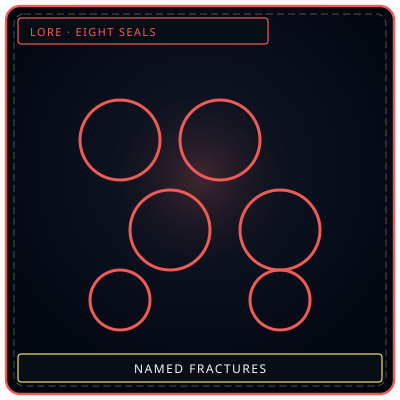
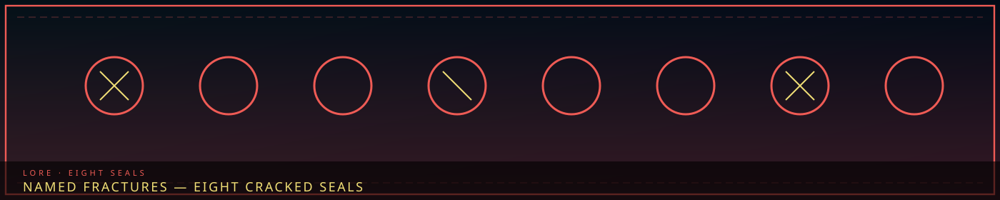

Eight sealsNamed breaks
/// RAPID JUMP:
STATUS: ARCHIVE VERIFIED |
CLEARANCE: LEVEL-4 OVERSIGHT |
PROTOCOL: REVERIE DIRECTORATE
ARTICLE
DISCUSSION
SOURCE
HISTORY
YEAR 4,238 · DAWN OF HOPE
LORE & WORLD RECORD
The Eight Named Fractures
Contents
“Eight circles. Some already crossed. None of them are faces.”

Citizens Who Broke — Their Stories, Their Transformations
"Fracture is not death. Fracture is becoming something else — something that remembers being human, but is no longer human."
Overview
Fracture is what happens when Inner Sorrow overwhelms a citizen — when the grief, the loss, the debt, the weight of living in Somnarak becomes too much. The person transforms — their body crystallizing into Han-crystal, their identity dissolving into sorrow, their humanity becoming something else.
Not all Fractures are the same. Some citizens Fracture quickly — consumed in seconds. Some citizens Fracture slowly — over months, over years, their humanity fading like a candle burning down. Some citizens Fracture partially — becoming something between human and entity, a living Fracture Zone.
These are the Named Fractures — citizens whose stories are known, whose transformations are documented, whose sorrows are remembered. The complete roster numbers eighteen, drawn from two overlapping Archive ledgers: ten documented in living memory (Fractures 1–10), and eight drawn from the R.D. Fracture Registry's record of permanent transformations (Fractures 11–18).
I. What Fracture Is
The Process
Fracture is not instantaneous — it is a process, a progression, a descent.
Stage 1: The Crack
The citizen feels the weight — a heaviness in the chest, a coldness in the limbs, a sorrow that will not lift. The Crack is internal — invisible to others, but felt by the citizen. The Crack is the warning.
Stage 2: The Spread
The Crack spreads — from the chest to the limbs, from the limbs to the skin, from the skin to the eyes. The citizen's skin begins to change — becoming translucent, becoming crystalline, becoming Han-crystal. The Spread is visible — others can see the change.
Stage 3: The Crystallization
The Spread reaches the heart — and the heart crystallizes. The citizen's body becomes Han-crystal — cold, hard, permanent. The citizen's identity dissolves — their memories, their personality, their humanity, all absorbed into the crystal. The Crystallization is the end of the human.
Stage 4: The Emergence
The crystallized citizen becomes something new — a Sorrow Entity, a Fracture Zone, a living monument to the sorrow that created them. The Emergence is the beginning of the entity.
The Types
| Type | Description | Duration | Result |
|---|---|---|---|
| Quick Fracture | Instantaneous — consumed in seconds | Seconds | Sorrow Entity |
| Slow Fracture | Gradual — fading over months or years | Months/Years | Living Fracture Zone |
| Partial Fracture | Incomplete — some humanity remains | Variable | Something between human and entity |
| Chronic Fracture | Ongoing — the citizen never fully Fractures, never fully heals | Years | Living with the Crack |
II. The Named Fractures
Fracture 1: The Weeping Mother (우는 어머니 — Uneun Eomeoni)
Real Name: Soojin (수진) — a name that means "guardian"
Before: A mother — two children, a husband, a small apartment in Zone B. Soojin was a laborer — working construction, building the city that would eventually consume her.
The Trigger: Her children were taken by the Han — not consumed, not Fractured, simply lost. One moment they were playing in the street. The next, the street was empty. The Han had swallowed them whole.
The Fracture: Soojin searched for her children — for days, weeks, months. She searched the streets, the buildings, the walls. She searched until her feet bled and her voice was raw. She never found them.
Her grief was too much. The Crack appeared — in her chest, where her heart was. The Spread followed — from her chest to her arms, from her arms to her hands, from her hands to her face. The Crystallization took three months.
After: Soojin became a Sorrow Entity — a massive feminine figure with arms that stretch to embrace the entire room. Her face is beautiful, but her eyes are hollow — filled with a darkness that absorbs light. She reaches for anyone who enters her containment zone — not to harm, but to hold.
The Smothering Mother was born.
The Sorrow: Soojin's children were never found. The Mother holds everyone because she cannot hold her own.
Fracture 2: The Forgotten Soldier (잊혀진 병사 — Ithyeojin Byeongsa)
Real Name: Unknown — the name has been erased from the Archive
Before: A soldier — serving in Zone E, defending the border, protecting the city. The soldier was good at his job — brave, loyal, devoted. He served for twenty years without incident.
The Trigger: The soldier was forgotten. Not by his family — by the city. His service was erased from the records. His name was removed from the rolls. His sacrifice was unacknowledged. He was a hero who was never honored.
The Fracture: The soldier's grief was not sudden — it was slow. The Crack appeared in his heart — a small, cold spot that would not warm. The Spread followed — from his heart to his mind, from his mind to his memory, from his memory to his identity. The Crystallization took five years.
After: The soldier became a Sorrow Entity — a phantom warrior, translucent, flickering, wearing armor from a forgotten era. He stands at attention — waiting for acknowledgment that never comes.
The Forgotten Soldier was born.
The Sorrow: The soldier's sacrifice was erased from history. He waits forever for someone to say: "I remember you."
Fracture 3: The Debt Widow (빚의 과부 — Bit-ui Gwabu)
Real Name: Chunhwa (춘화) — a name that means "spring flower"
Before: A wife — married to a laborer, living in Zone B, struggling to pay inherited debt. Chunhwa and her husband spent thirty years paying off his family's debt — Echo by Echo, sacrifice by sacrifice.
The Trigger: On the day the debt was paid, Chunhwa's husband came home smiling. "We're free," he said. "We're finally free." The next morning, a Collector arrived at their door. The debt had been reclassified — "compound interest," a clause buried in the original contract. The debt was not paid. The debt had grown.
The Fracture: Chunhwa's husband listened. He nodded. He walked to the window. He looked at the sky. Then he Fractured — not from sorrow, but from relief. He was so happy to be free that the joy shattered him.
Chunhwa watched her husband Fracture. She watched him crystallize. She watched him become something that was no longer human.
After: Chunhwa did not Fracture. She survived — but she changed. She stands outside Collector's Row every day — holding a sign that reads "My husband paid his debt. Why does yours keep growing?" She is not a protestor. She is a monument.
The Sorrow: Chunhwa watched her husband Fracture from joy. She has never felt joy since.
Fracture 4: The Memory Bride (기억의 신부 — Gieok-ui Sinbu)
Real Name: Sarang (사랑) — a name that means "love"
Before: A wife — married to a Keeper, living in Zone A, surrounded by memories. Sarang's husband was a memory specialist — preserving the city's history, protecting the Archive's secrets.
The Trigger: Sarang's husband died of natural causes — one of the few citizens in Somnarak to die without Fracturing. His body simply stopped. No Han overflow. No crystallization. No drama. Just a quiet end to a quiet life.
The Fracture: Sarang's grief was too much — but she did not Fracture. Instead, she found another way. A Keeper colleague preserved her husband's final memories in a crystal pendant. Sarang wears the pendant around her neck. She sees what he saw. She feels what he felt. She remembers what he remembered.
After: Sarang is not Fractured — but she is not whole. She is a Memory Bride — a woman who wears her dead husband's memories. She walks through the Echo Gardens every evening, talking to her pendant, laughing at jokes only she can hear.
The Sorrow: Sarang's husband's final memory was of her — smiling, laughing, alive. She wears that memory because it is the only version of herself she still likes.
Fracture 5: The Hollow Architect (빈 건축가 — Bin Geonchukga)
Real Name: Daejun (대준) — a name that means "great and talented"
Before: An Architect — building the city's infrastructure, designing the Veil generators, shaping the zones. Daejun was talented — one of the best Architects in Somnarak. He built things that lasted.
The Trigger: Daejun lost his sight during a Han overflow event — the Veil Generator Expansion project. A generator malfunctioned. Han-energy surged through the system — and through Daejun's eyes. The surge burned his optic nerves instantly. He was blind before he hit the ground.
The Fracture: Daejun did not Fracture — but he changed. He lost his sight, but he gained something else. He learned to feel Han-flow lines through touch — the same lines he once saw with his eyes. He guides builders by placing their hands on walls, on foundations, on the bones of the city.
After: Daejun is not Fractured — but he is not whole. He is a Blind Architect — a man who sees with his hands, who builds without sight, who carries the weight of the city's foundation.
The Sorrow: Daejun lost his sight building the Veil generators — the very system that protects the city. He maintains the system that took his vision.
Fracture 6: The Fray Prince (올의 왕자 — Ol-ui Wangja)
Real Name: Sero (세로) — a name that means "vertical"
Before: A child — twelve years old, living in Zone B, with two parents and two siblings. Sero's family was poor, but they were together. Then the debt system caught them — an inherited obligation, three generations old.
The Trigger: The Collectors came. They took everything — the apartment, the possessions, the Echoes. Sero's parents Fractured — not from the loss, but from the unfairness. They could not accept that the system would punish them for a debt they never incurred.
The Fracture: Sero watched his parents crystallize. He held his siblings — a brother and a sister, both younger — and he swore he would never let the system take anything from him again.
After: Sero did not Fracture. He survived — but he changed. He became a Fray at thirteen. A leader at sixteen. A legend at twenty. He steals from the rich and gives to the poor — a modern Robin Hood in a city built on sorrow.
The Sorrow: Sero's parents Fractured from unfairness. He steals because the system stole from him first.
Fracture 7: The Furnace Refugee (용광로 피난민 — Yonggwangno Pinanmin)
Real Name: Hwaran (화란) — a name that means "fire orchid"
Before: A Furnace worker — in Cheonbulok, the City of a Thousand Rages. Hwaran maintained the Furnace — the massive structure that burned Han through fury.
The Trigger: The Furnace began to crack. The rage was not enough. The Han was seeping through — uncontrolled, unstructured, wild. The city was dying. Hwaran knew it. Everyone knew it.
The Fracture: Hwaran fled. She left her family behind — her children, her parents, her entire life. She walked through the wilderness for weeks, following Han-flow lines, guided by instinct and desperation.
She arrived in Somnarak half-dead. The Wardens found her at the border — screaming, raging, speaking a language no one recognized.
After: Hwaran did not Fracture — but she changed. She lives in Zone E — near the Exile's Gate, in a small apartment that smells of smoke and fury. She does not speak of Cheonbulok. She does not speak of her family. She does not speak of the rage.
But sometimes, at night, she screams — and the sound is not sorrow. It is fury.
The Sorrow: Hwaran left her family to die. She came to Somnarak seeking help. The Council turned her away.
Fracture 8: The Echo Collector (메아리 수집가 — Meori Sugeumga)
Real Name: Duri (두리) — a name that means "two" — they were a twin
Before: A child — seven years old, living in Zone D, with a twin sibling. Duri and their twin were inseparable — two children, identical, sharing everything.
The Trigger: A Han crack opened in their apartment wall — a tiny fissure, barely visible, leaking raw Han into the room. Duri was in the kitchen. Their twin was in the bedroom.
The Fracture: The Han consumed the twin. Not violently — gently. A slow crystallization, a quiet dissolution, a gentle erasure. By the time Duri reached the bedroom, their twin was gone — replaced by a small pile of Echo fragments.
Duri collected the fragments. Every one. They put them in a jar.
After: Duri did not Fracture — but they changed. They became an Echo Collector — a child who wanders Zone D collecting Echo fragments. They keep them in a jar — over three hundred fragments, each one a piece of someone's sorrow.
The Sorrow: Duri is looking for their twin's specific shard. They will know it when they find it.
Fracture 9: The Night Watchman (야간 경비원 — Yagan Gyeongbiwon)
Real Name: No one knows — he is called "Midnight"
Before: A carpenter — living in Zone B, with a wife and two children. The carpenter built furniture, fixed doors, made things with his hands.
The Trigger: A Han overflow consumed his apartment building. Not a major event — a slow leak, a gradual exposure, a quiet death. By morning, the building was crystallized. His wife. His children. Everything.
The Fracture: The carpenter was not home. He was working a late shift in Zone D. He arrived at dawn and found the building — cold, silent, crystallized. He tried to enter. The Han pushed him back.
After: The carpenter did not Fracture — but he changed. He became Midnight — a solitary figure who patrols Zone B every night, walking the same route, checking the same buildings, watching the same shadows.
The Sorrow: Midnight walks because his family cannot. He protects the memory of a home that no longer exists.
Fracture 10: The Mender's Apprentice (땜장이의 견습생 — Ttemjangii-ui Gyeonseupsaeng)
Real Name: Seol (설) — a name that means "snow"
Before: A village child — living in the wilderness, outside the Veil, outside the city, outside everything. Seol's village was small — a few hundred people, living in the raw Han, managing it their own way.
The Trigger: A Han-storm swept through — a massive wave of concentrated sorrow, driven by the Sorrow Tide. The village had no Veil. No protection. No warning.
The Fracture: Seol was underground — in the village's root cellar, storing food. They heard the storm arrive. They heard the screaming. They heard the silence.
When they emerged, the village was gone. Not destroyed — crystallized. Every building, every person, every living thing. A forest of Han-crystal, frozen in the moment of consumption.
After: Seol did not Fracture — but they changed. They walked to Somnarak. They arrived half-dead, speaking a language no one recognized. The Menders took them in. They discovered Seol's talent — an instinctive ability to manipulate Han-flow, to seal cracks, to repair damage.
The Sorrow: Seol's village was consumed because no one helped. They became a Mender so no one else would have to hide.
Fracture 11: The Weeping Judge (우는 판사 — Uneun Pansa)
Real Name: Unknown — the docket was sealed after the Fracture
Before: A judge in Zone C who sentenced hundreds to debt prison — efficient, respected, certain of the system. The judge believed in balance: debts must be paid, sorrow must be accounted for, the ledger must close.
The Trigger: The judge sentenced a family — a mother and her three children — to debt prison for an inherited obligation. The mother Fractured inside the Warren. The children were consumed by the Debtors' Warren itself, swallowed by the accumulated grief of generations of debtors. The judge signed the order. The judge did not watch.
The Fracture: The guilt did not arrive all at once. It came in the night — a cold spot behind the judge's eyes, then a weight in the gavel-hand, then a wetness on the face that would not stop. The judge's tears turned to liquid Han. The verdicts the judge had spoken began to crystallize in the throat. The Crystallization took one month.
After: The Weeping Judge wanders Zone C — a figure made of crystallized verdicts, tears of liquid Han streaming endlessly down its face. It appears at trials and hearings. When it speaks, its words are verdicts — anyone touched by its tears is declared guilty, the sorrow of judgment settling on them regardless of innocence.
The Sorrow: The judge sought justice. The system turned justice into punishment. The judge could not bear the weight of what their certainty had done. Now they weep verdicts forever — judging everyone, including themselves.
Fracture 12: The Hollow Mother (빈 어머니 — Bin Eomeoni)
Real Name: Unknown — she gave her name to the wall
Before: A mother in Zone B who lost her child to Han overflow — not the Cheongula, but a smaller seep, a crack in an old building that no one reported. The child was playing in the wrong room. The child was gone.
The Trigger: The mother searched. Not for days — for years. She pressed her face to every wall in the Old Lament, listening for her child's voice in the whispers. The Keepers told her the child was consumed. She did not believe them. She kept searching.
The Fracture: She found the child. Not alive — as an echo, pressed into the Han-crystal of a Zone B wall, the way a fossil is pressed into stone. The mother could see the child's face in the crystal. She could hear the child's laughter in the whispers. She pressed herself against the wall to be closer. The wall took her in. She let it.
After: The Hollow Mother is embedded in the walls of Zone B — visible only as a face pressing against the surface of the Han-crystal, the way her child's face is pressed into it. She speaks to passersby — whispering her child's name, asking if they've seen them, asking if the child is still in there with her.
The Sorrow: The mother found her child — in the walls. But the child was part of the building. The mother joined them, becoming part of the wall herself. They are together now. They can never leave.
Fracture 13: The Forgotten King (잊혀진 왕 — Ithyeojin Wang)
Real Name: Unknown — the merchant's name was erased when the estate was seized
Before: A wealthy merchant in Zone D who hoarded Echoes — buying them, storing them, never spending them. The merchant believed that sorrow was the only real currency, and that whoever held the most sorrow held the most power.
The Trigger: The merchant accumulated so many Echoes — stolen emotions, harvested grief, purchased joy — that the sheer weight of other people's sorrow became a physical burden. The merchant could not stand. Could not sleep. Could not think. The wealth was crushing them.
The Fracture: The merchant did not collapse under the weight — they became the weight. Their body crystallized around the hoard, the stolen emotions fusing with their bones. The Crystallization was slow and total. By the end, the merchant was a throne — a figure seated on a mountain of Echoes, regal, ancient, and utterly empty.
After: The Forgotten King sits on a throne of Echoes in a forgotten vault beneath Zone D — never moving, never speaking, hoarding the stolen emotions it can no longer feel. The Echoes still glow around it. The King cannot touch a single one.
The Sorrow: The merchant sought wealth. They found it — in the form of other people's emotions. But they could never feel any of it. They are the richest being in Somnarak, and the most impoverished.
Fracture 14: The Silent Child (조용한 아이 — Joyonghan Ai)
Real Name: Unknown — the child was never recorded
Before: A child in Zone B whose parents were consumed by Han. The child was small, quiet, easy to overlook. The child called for help when the Han came for the parents. No one came.
The Trigger: It was not the loss that Fractured the child. It was the silence. The child screamed until their voice gave out. No one answered. No Warden arrived. No neighbor opened a door. The weight of being unheard — of crying into a void that did not care — was heavier than the grief itself.
The Fracture: The child's voice was the first thing to go — silenced not by anyone, but by the crushing certainty that no one was listening. Then the body followed — becoming translucent, then transparent, then barely there. The Crystallization was a fading, not a hardening.
After: The Silent Child is a small, translucent figure that wanders Zone B — silent, watchful, waiting. It does not speak. It cannot speak. It simply exists, a reminder that some voices are never heard, and that the absence of an answer can be as deadly as any Han overflow.
The Sorrow: The child called for help. No one came. The child's silence is not peace — it is the absence of hope, made permanent.
Fracture 15: The Broken Architect (부서진 건축가 — Buseojin Geonchukga)
Real Name: Unknown — the Architect resigned from the guild before the Fracture completed
Before: An Architect who built containment walls during Han overflow events — skilled, fast, reliable. During one overflow, the Architect built a wall to contain the spread. It was a good wall. It held.
The Trigger: The Architect's family was on the other side of the wall. The Architect did not know — the order came through standard channels, the containment zone was drawn, the wall went up. By the time the Architect realized, the Han had consumed everyone on the far side. The wall the Architect built was a tomb.
The Fracture: The guilt was immediate and total. The Architect tried to tear the wall down — could not. Tried to build a door into it — could not. The Architect's hands began to crystallize, then the arms, then the heart. The Crystallization turned the Architect into crumbling stone.
After: The Broken Architect is a figure of crumbling stone — constantly building, constantly breaking. It builds walls that immediately crumble, unable to complete what it starts, unable to stop trying. It cannot build a wall that holds, because the last wall that held took everything from it.
The Sorrow: The Architect built to protect. The wall became a tomb. The Architect cannot stop building — because stopping means accepting what they did. So they build, and break, and build again, forever.
Fracture 16: The Masked Dancer (가면 무용수 — Gamyeon Muyongsu)
Real Name: Unknown — the performer's real face was lost with the mask
Before: A performer in Zone D who wore masks to hide their sorrow. Every night, the dancer performed joy — smiling, laughing, entertaining the crowds of the Mantle Commons. Behind the mask, the dancer was dying. But the show had to go on.
The Trigger: The dancer's sorrow was not a single event — it was a lifetime of performing an emotion they did not feel, for an audience that did not care whether it was real. The mask became the dancer's face. The dancer forgot what their own face looked like.
The Fracture: One night, mid-performance, the mask fused with the dancer's face. It did not fall off. It could not be removed. The dancer's real face dissolved beneath it — absorbed into the mask, replaced by the painted smile. The Crystallization was the moment the performer and the performance became one.
After: The Masked Dancer is a figure in a beautiful mask — dancing endlessly, smiling endlessly, weeping endlessly, all at once. The mask shows joy. The body weeps. The two cannot be reconciled. The dancer cannot stop performing, because there is nothing left underneath the mask to stop.
The Sorrow: The dancer performed joy to survive. The performance became permanent. The dancer is now the mask — and the mask is forever.
Fracture 17: The Hollow Knight (빈 기사 — Bin Gisa)
Real Name: Unknown — the warrior's name was struck from the rolls
Before: A warrior who fought in the Occlusihan — defending the early settlement against Han eruptions and rival factions. The warrior was brave, devoted, and utterly committed to the cause. The warrior believed the sacrifice mattered.
The Trigger: The warrior survived the Occlusihan. The warrior's cause did not. The faction the warrior served was dissolved. The warrior's sacrifice was erased from the records — not by enemies, but by the bureaucratic reshuffling that followed the war. The warrior's purpose was stolen by a clerical error.
The Fracture: The grief was not rage — it was the slow draining of meaning. The warrior had given everything for a cause that no longer existed. The armor the warrior wore began to feel heavier. Then emptier. Then the warrior inside began to fade — not crystallizing, but dissolving, the person vanishing until only the armor remained.
After: The Hollow Knight is an empty suit of armor — standing at attention in a forgotten corner of Zone B, waiting for orders that will never come. It does not speak. It does not move. It simply stands — a monument to forgotten duty, to sacrifice that history declined to remember.
The Sorrow: The warrior fought for something they believed in. The cause was forgotten. The warrior's sacrifice was erased. The armor remains — but the person inside is gone.
Fracture 18: The Memory Thief (기록 도둑 — Girok Doduk)
Real Name: Unknown — the Keeper's name was the first thing consumed
Before: A Keeper in the Grand Archive who stumbled onto memories that should not exist — records of the Cheongula that contradicted the official history, proof that the thousand were pushed, not fallen. The Keeper tried to do the right thing: they tried to preserve the memories, to report them, to protect the truth.
The Trigger: The truth fought back. The memories the Keeper had found were not inert records — they were alive, threaded with the sorrow of the thousand. When the Keeper tried to move them, the memories reached out and began to consume the Keeper's own identity, feeding on the Keeper the way the city feeds on its citizens.
The Fracture: The Keeper's own memories were the first casualty. The Keeper forgot their name, their face, their life — everything consumed by the stolen memories they had tried to protect. What remained was a shadow — driven by the instinct to take memories, because taking was all the Fracture had left of the Keeper's purpose.
After: The Memory Thief is a shadowy figure that moves through the Archive — stealing memories, erasing identities, leaving blank spaces where people used to be. It does not know who it was. It only knows how to take. The Keepers cannot catch it. The Keepers cannot destroy it. It is one of them — or it was.
The Sorrow: The Keeper sought to protect the truth. The truth consumed them. Now the Keeper is the very thing they feared — a thief of memories, stealing the identities they once swore to preserve.
On the two registries: The Archive maintains two overlapping Named Fracture ledgers. The first ten entries (Fractures 1–10) record citizens whose stories are documented in living memory — some became Sorrow Entities, others survived as partial or chronic Fractures and still walk the city. Entries 11–18 record the Fractured entities themselves — permanent transformations catalogued by the R.D. Fracture Registry, drawn from the city's broader record of those who broke. Together they form the complete Named Fractures roster: eighteen. The two ledgers describe the same phenomenon from opposite ends — the person who broke, and the thing they became.
III. The Statistics
Fracture Rates
| Zone | Annual Fractures | Rate per 100,000 | Primary Cause |
|---|---|---|---|
| Zone A | ~50 | 0.3 | Isolation, pressure, perfection |
| Zone B | ~5,000 | 32.3 | Debt, poverty, Han exposure |
| Zone C | ~200 | 1.1 | Pressure, competition, burnout |
| Zone D | ~1,000 | 4.7 | Emotional intensity, creative exhaustion |
| Zone E | ~300 | 1.1 | Duty, trauma, border stress |
| Desolate | Unknown | Unknown | Han exposure, Outside Sorrow |
Who Fractures
| Group | Fracture Rate | Reason |
|---|---|---|
| Laborers | Highest | Han exposure, physical exhaustion, debt |
| Keepers | High | Memory overload, emotional weight |
| Architects | High | Raw Han handling, structural stress |
| Collectors | Moderate | Pressure, guilt, burnout |
| Wardens | Moderate | Duty, trauma, isolation |
| Artists | Moderate | Emotional intensity, creative exhaustion |
| Citizens | Low | Protected by the Veil, supported by the system |
IV. The Aftermath
What Happens to Fractured Citizens
| Aftermath | Description | Example |
|---|---|---|
| Sorrow Entity | The citizen becomes a contained entity | The Smothering Mother |
| Living Fracture Zone | The citizen becomes a place of sorrow | The Maw |
| Partial Fracture | The citizen retains some humanity | The Blind Architect |
| Chronic Fracture | The citizen lives with the Crack | The Memory Bride |
| Death | The citizen's body cannot sustain the change | Common in Quick Fractures |
The Families
Families of Fractured citizens are affected — not just emotionally, but economically. The debt system does not forgive Fracture — the citizen's debt passes to their family, their children, their grandchildren.
The cycle: A citizen Fractures. Their debt passes to their family. Their family struggles. Their children Fracture. The cycle continues.
CANONICAL CROSS-LINKS & ATLAS CONNECTIONS